Construction Physics 中英对照 16 张原图
造出一门新技术，本质上是在一个巨大的高维「设计空间」里搜索。空间的组合规模大到荒谬：光 272 条规律的两两组合就超过可观测宇宙的原子总数；一个 8 位加法器只是 10177,554 种电路表型中的一种。
但信息可以把空间砍半，每一条比特都砍一次。作者用 PTOP 模型（Phenomena Triggered by Objects with Properties，「带属性的对象触发的现象」）把这件事做成可模拟的实验，得到三个可迁移的结论：① 模组化搜索把 10 亿次盲搜降到约 1,300 次；② 「有性繁殖」（双亲交叉）比纯突变快一个数量级以上（约 100 代 vs 2,000 代）；③ 一旦要同时优化多个维度，搜索难度超线性上升，且不同目标的最优设计互不相同。
我一直在研究的一个问题是：技术进步到底是什么性质？新技术如何进入世界、又如何随时间改进？什么因素在影响它？总体上应该怎么看待它？我从几个不同角度碰过这个问题：写过贝尔实验室的运营与遗产，写过具体技术如何一步步改进，写过"多重发明"有多常见、以及我们要等多久才等到下一次发明，等等。
我当前的想法是：创造某项新技术，最适合被理解为一个搜索过程。一项技术可以被看作高维「设计空间」或「技术空间」中的一个点，这个空间包含所有可能的技术：零件、材料、自然现象等等的一切可能排列。想当发明家的人要做的是在这个空间里导航，把那些行不通的排列筛出去，找到行得通的那些。
这个搜索之所以困难，是因为——就像任何需要枚举大量元素组合的情形一样——技术空间大到不可理解。经济学家 Matt Clancy 在《Are Technologies Inevitable?》里做过一个粗略估算：维基百科列出的 272 条「命名方程」描述了世界上的各种规律，从纳维-斯托克斯方程（描述流体运动）到阿伦尼乌斯方程（描述化学反应的速率随温度变化）再到埃克斯纳方程（描述泥沙如何在河流中沉积）。如果把这当作「一项技术可以利用的现象数量」的极粗略估计，就意味着可能造出来的技术数量极其庞大。Clancy 写道：
If we've got 272 regularities to work with, for example, then the number of possible combinations of these regularities is two, raised to the power of 272 (since every regularity can be used or not used: two options). But 2^272 is more than some estimates of the number of atoms in the observable universe.
—— Matt Clancy,《Are Technologies Inevitable?》（本文引自 Construction Physics 原文）
相比之下，对宇宙原子数的常见估计是 1080，约等于 2265。而且很可能还有远远多得多、某项技术可以利用的规律，远不止 272 条（作者补充：一些他尚未完成的研究提示至少有几千条）。
正如 Clancy 指出的，这个大得离谱的数字还**严重低估**了可能技术的数量，因为它没有考虑同一个现象可以有很多种不同的用法。在 Brian Arthur 与 Wolfgang Polak 的论文《The Evolution of Technology within a Simple Computer Model》（今年早些时候我们解读过）里，两人指出：即便只考虑由三种基本元件（NAND 门，以及 1 和 0 两个取值）搭成的逻辑电路这个宇宙，输入输出数量不多时，能搭出的不同电路数量就已经惊人：
If a component has n inputs and m outputs there are (2^m)^(2^n) possible phenotypes… For example, an 8-bit adder is one of over 10^177,554 phenotypes with 16 inputs and 9 outputs.
—— Arthur & Polak
所以，某个新技术的搜索空间是巨大的。而我们对付巨大搜索空间的手段就是信息：
Each bit of information cuts a search space in half, so even a relatively small amount of information can quickly narrow down what seems like a huge search space.每一比特信息把搜索空间砍掉一半，所以哪怕相对少量的信息，也能迅速把看似巨大的空间压缩掉。当我们创造某项新技术时，我们实际在做的就是收集信息：搞清什么行得通、什么不行，什么有希望、什么没希望，从而在技术的巨大可能性空间里收窄，找到一个能满足某个特定目标的方案。
19 世纪就有很多人对造飞行器感兴趣，但当时并不清楚哪种元素排列才能成功。好在人们已经掌握了物理定律，也见过鸟类这个「存在性证明」，想当发明家的人其实已经在一个被大幅收窄过的空间里工作：他们大致知道飞行器需要哪些要素——升力面、推进系统、控制手段——也有个关于这些要素该怎么排布的大致想法。但用这些基本要素造飞行器仍有海量 ways，人们花了大量时间精力造出一堆并不work的机器。莱特兄弟最终的成功，很大程度上要归功于他们极其擅长收集信息，让他们比竞争对手快得多地收敛到一个能飞的飞机设计上。
我之前解读 Arthur 与 Polak 那篇技术演化论文时已经探讨过技术搜索的性质（那篇论文用一个简单模拟演化出不同的逻辑电路，在 enormous 的可能性海洋里找到可行的技术）。我很喜欢 Arthur 在论文里的基本模拟方法——随机生成技术，看找到可行方案有多容易有多难——但他自己想用模拟再往下挖一层。Arthur 用的是数字电路（像 NAND、OR、AND 这种逻辑门的不同排列，可以实现加法之类的功能），而我希望有一个更通用的模型，既能刻画多种不同类型技术的本性，又简单到容易模拟。
我想出来的模型受 Brian Arthur 另一本著作《The Nature of Technology》启发。Arthur 在书里把技术定义为「被捕捉并加以利用的一组现象」（"a set of phenomena captured and put to use"）：
… a practical technology consists of many phenomena working together. A radio receiver is not just a collection of parts. Nor is it merely a miniature signal processing factory. It is the orchestration of a collection of phenomena — induction, electron attraction and repulsion, electron emission, voltage drop across resistance, frequency resonance — all convened and set up to work in concert for a specific purpose.
—— Brian Arthur,《The Nature of Technology》
例如，爱迪生的灯泡就同时用到了几个不同的现象：焦耳热（电流通过材料会使其升温）、白炽（足够热的物体会发光）、透明（某些材料允许光穿过），等等。这类现象通常在条件具备时会自动触发——你可以把条件理解为「正确的对象，带着正确的属性，被放在某种特定排列上」。在灯泡里，电流流过灯丝时焦耳热自动发生，灯丝足够热时白炽自动发生；而灯泡里抽成真空，是为了防止另一个不想要的现象——碳与氧反应——自动发生并毁掉碳丝。
这三个要素——现象（Phenomena）、对象（Objects）、属性（Properties）——就是我这个技术模型的基本组件，我把它叫做 PTOP：Phenomena Triggered by Objects with Properties。模型里有一批对象，每个对象带一组指定的属性；只要正确的对象带着正确的属性被放在正确的排列上，一个现象就会被自动触发，并可能产生各种效果：改变已有对象的属性、创造新对象，等等。把正确的对象与现象按正确顺序串起来，就能造出你想要的结果——某个带着特定理想属性的对象。比如灯泡的一个简化版 PTOP 模型大概长这样：
These three elements — Phenomena, Objects, and Properties — are the basic components of the technological model I came up with, which I call PTOP, for Phenomena Triggered by Objects with Properties.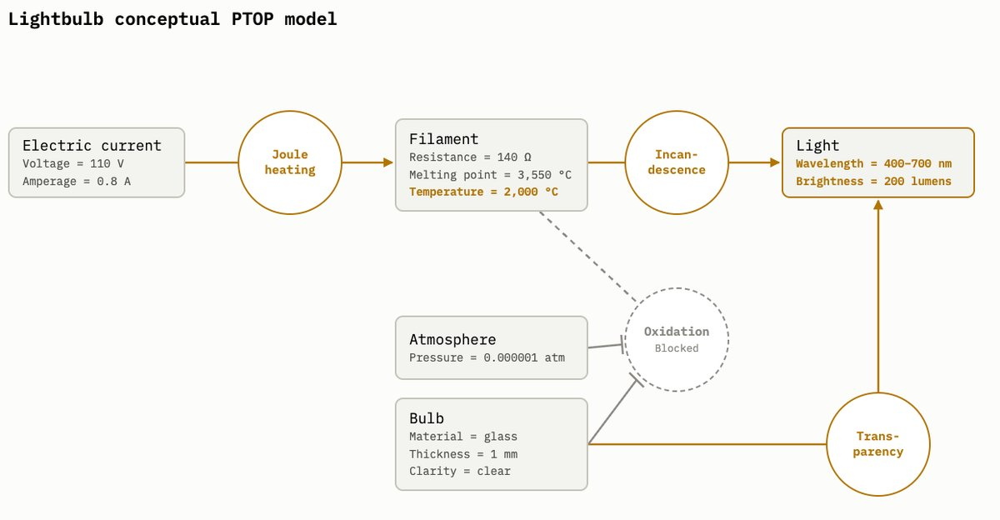
把合适的灯丝、气氛、泡壳和电流安排到位，就能触发一串现象，最终得到具有理想属性的「光」。更复杂技术的 PTOP 模型大概是这样，比如施乐复印机，它用「光电导」「电晕放电」等现象来生成文件副本：
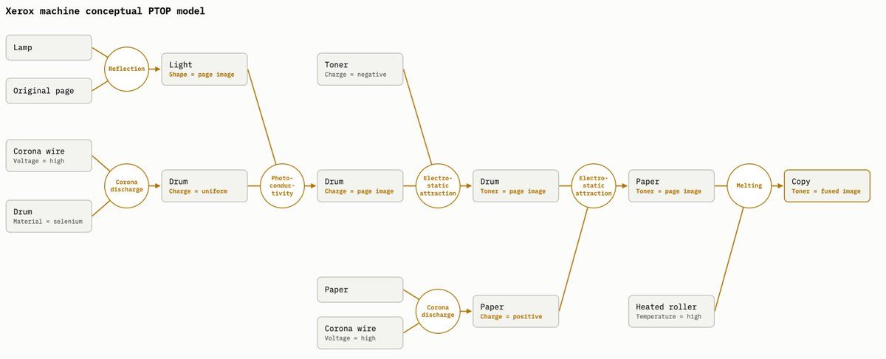
我喜欢这个模型，因为它抓住了所有类型技术共有的基本要素——自然现象以及触发它们的条件——从而让我们可以研究可能技术的那个「空间」。而这个基本想法可以有很多种实现方式，从极简的技术表示到极复杂的都行（某种程度上这是缺点，比如我花了超级久才想出一个自己满意的、可模拟的实现），但它对研究技术搜索的不同侧面很有用。下面看几个不同实现，看看能得到什么。
先从极简版本开始。这一版有 10 种可能的对象，每种有两个可能属性。第一个属性 P0 取 1 到 10 的任意值，是该对象固有且唯一的，可以理解成模型里有 10 种不同的化学元素，各自取不同的 P0 值。第二个属性是尺寸（size），同样取 1 到 10，但可调：所以你可以有 P0=1、size=10 的大对象，也可以有 P0=1、size=1 的小对象。总体上共有 100 种可能的对象形态：10 种对象类型，每种有 10 种尺寸。
这一版模型总共只有四个现象。每个现象在两个对象被正确连接、且第一个对象（称之为输入对象）尺寸正确时被触发；触发时，它给第二个对象（输出对象）添加一个特定属性。所以在下图里，当一个 P0=1、size=5 的对象连到 P0=2 的对象上时，就触发一个现象，给第二个对象加上新属性 P1。
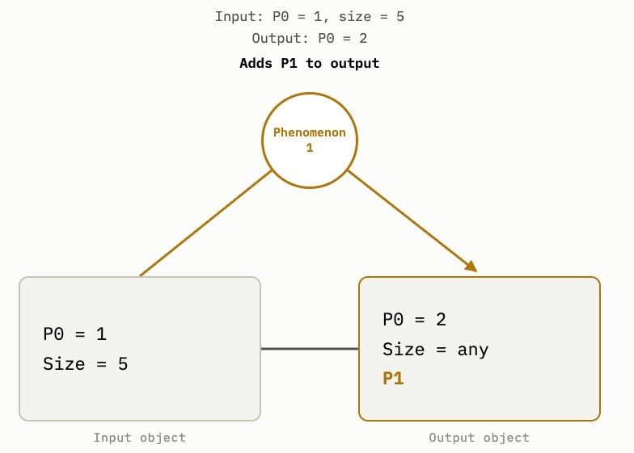
模型里的现象是层级排列的：触发每个现象，都需要一个带着上一个现象所加属性的对象。也就是说，要触发加上 P2 的现象，你需要有一个带 P1 属性的对象；P3 又需要带 P2 的对象，以此类推。你可以把这种层级理解成：「要触发白炽，我需要一个高温的对象；要达到高温，我得用焦耳热这个现象，而它要靠正确种类的电流来触发；要造出电流，我需要……」
这一版模型的目标，是造出一个带 P4 这个「最终」属性的对象。你可以把它想成「亮度合适的光」或「尺寸和球度都合格的铅弹」。做法是排出一组恰好正确的排列：五个对象排成一条线，每个都带正确的 P0 与尺寸。
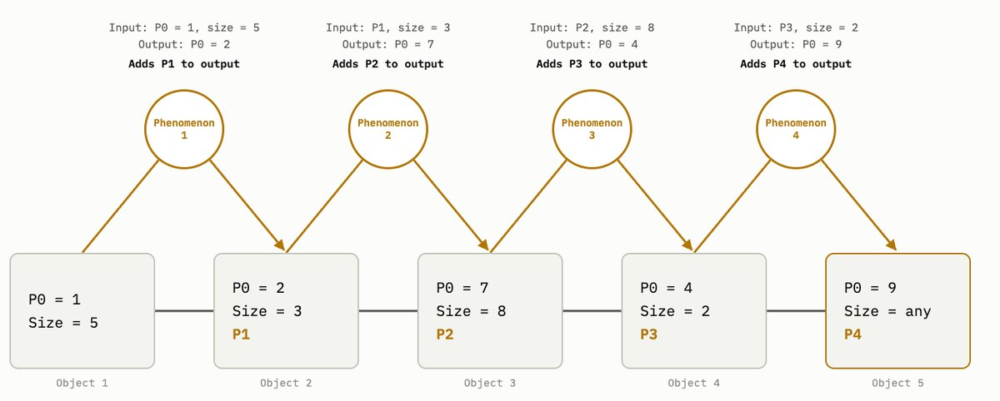
这是一个非常简单的 PTOP 实现，我们称之为「一级模型」。但它已经能说明技术搜索过程的几个事实。第一，即使在这个极简模型里，搜索空间也很大：10 种对象类型、10 种尺寸、共 5 个对象，意味着 (10×10)5 = 100 亿种可能排列。1 如果放大到 100 种对象、100 种尺寸、10 个现象，就是 1040 种选择；再加点属性维度（比如对象除了尺寸还有「温度」「密度」），数字很快就会超出天文量级。
第二，这个简单版本也展示了信息对大搜索空间的力量。我们看 Arthur 的电路搜索时注意到，让搜索变得可行的关键是模组化（modularity）：先为某个子部件找到可用设计，把它锁定进系统，当作可重复使用的「基本元件」继续组合。模组化让你不必一次性把设计的每个部分都做对，它实际上筛掉了大量可能性，缩小了必须穿越的搜索空间。在那个模拟里：
A useful way of thinking about our 68 NAND gate search is that it's like a huge, branching tree… until at the end we have 2^852 possible "leaves," each one representing a unique way of wiring up all 68 gates.
—— Brian Potter（引自作者此前解读 Arthur 模拟的那篇文章）
相比之下，每加一个门就检查一次对不对，会极大压缩可能性：每当发现一个门接错了，就消灭了从那个点分叉出去的所有可能。如果每个门有 1000 种接法，每猜对一次，就把下游的可能性砍掉 99.9%。于是我们能看到同样的基本机制在 PTOP 模型里起作用：10 种对象类型、10 种尺寸、4 个现象、10 亿种有效可能，若靠随机生成技术一次性猜中整个正确设计，平均需要 10 亿次尝试。
With 10 object types, 10 sizes, 4 phenomena, and 1 billion effective possibilities, it takes (on average) 1 billion attempts to guess the entire correct design in one shot by randomly generating possible technologies.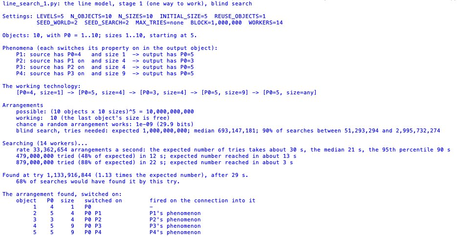
但如果我们做模组化搜索——每次只随机加一个对象、并随机调整上一个对象的尺寸，直到触发下一个现象，然后把成功的设计锁定下来再继续——搜索就快得多，因为我们把一个 10 亿可能的空间，换成了一连串 100 可能的空间。找到那个「10 类型、10 尺寸、4 现象」的答案，平均只需 1,300 次尝试；连天文数字级的搜索空间也因此变得可行。
It takes on average 1,300 attempts to find the 10 type, 10 size, 4 phenomena answer, and even astronomically enormous technology space search problems become tractable.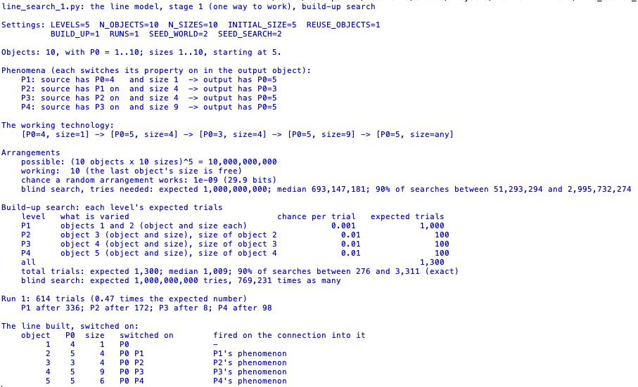
这一版还显示，模组化的程度对一项技术有多容易找到，影响巨大：能锁定的模块越多，爬到可用技术的每一级台阶就越短、越容易。把 10 类型 10 尺寸的模型拉到 100 个现象层级，搜索空间变成 10200，但有 100 级可以锁定，随机搜索平均约 10,000 次就能找到；而同样大小的搜索空间，若拆成 10 个现象层级、每层却有 100 亿种对象类型与尺寸组合（只给 10 级台阶），那么即便用模组化搜索也完全不可能靠随机找到。
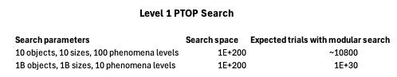
这一版还让我们看到，不同种类的知识能让搜索变容易。正如 Joel Mokyr 在《The Gifts of Athena》里所说，科学知识在创造新技术时非常有用，因为「如果搜索者对起作用的自然原理一无所知，那么需要搜索的实验可能性范围会大得多」。在一级 PTOP 模型里，科学知识大概长这样：「现象 3 不能和 2 型对象一起用」或「现象 4 的两个对象必须等大」。
这类科学知识的作用，取决于它筛掉了多少可能性：筛掉的越多，提供的信息比特越多，越有用。像「现象 5 不能用对象 1」或「对象 3 不能碰对象 4」这类知识，提供的信息量相对较小，因为它排除的可能性不多；相反，「现象 4 必须用对象 1」或「对象 3 必须碰对象 4」筛掉的可能性多得多，提供的信息也多得多，把搜索收窄得有效得多。
现实中技术发展之所以可行，一个原因就是我们的很多知识属于后者。现象通常有具体的触发条件，这些条件可以被观察和发现：马可尼做无线电时知道产生电磁波需要什么，爱迪生知道让灯丝白炽需要什么条件，曼哈顿工程的科学家们大致知道触发核链式反应需要什么条件。
即便这个高度简化的版本，也足够用来研究技术搜索的各种动态，但要说技术搜索更有意思的动态，它还是太简单了。那就加点复杂度。第一，真实现象往往需要多个输入对象，而不止一个：汽油机里要触发「燃烧」现象，需要燃料、氧化剂和电火花。第二，要达成某个目标，常常有多个不同的现象可用：比如你想产生机械运动，可以利用多种现象，为它们设计的马达——电动机、液压马达、内燃机——工作方式各不相同。所以我们让每一层不止一个现象，每个现象各自需要一组带正确属性的对象来触发。
一级模型里，一个技术只有唯一可行版本；二级模型则存在多个可行设计。而且与上一版对象排成直线不同，这一版会形成分叉的树状链条。
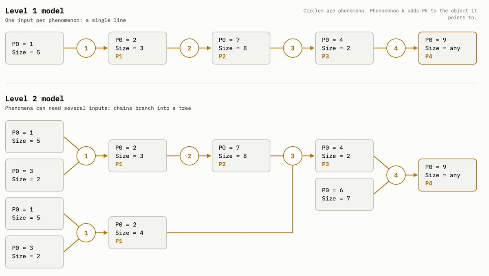
在这一版里（我们称之为「二级模型」），虽然可行的设计数量很多，但不可行的技术数量要大得多，纯盲搜很快就变得不划算。
解法是换一种模组化搜索的 flavor，很像 Arthur 在技术演化论文里用的「封装」（encapsulation）：模型先随机组合不同对象、不同属性、不同连接方式；每当某个对象排列触发了某些现象，这个排列就被打包成一个新对象，之后这个新对象可以被模拟随机地与其他对象继续组合。和之前那种更简单的模组化搜索一样，这让模拟能积累部分解、在巨大的搜索空间里快速找到可行技术。
We can solve this with a slightly different flavor of modular search, very similar to the "encapsulation" that Arthur uses in his technological evolution paper.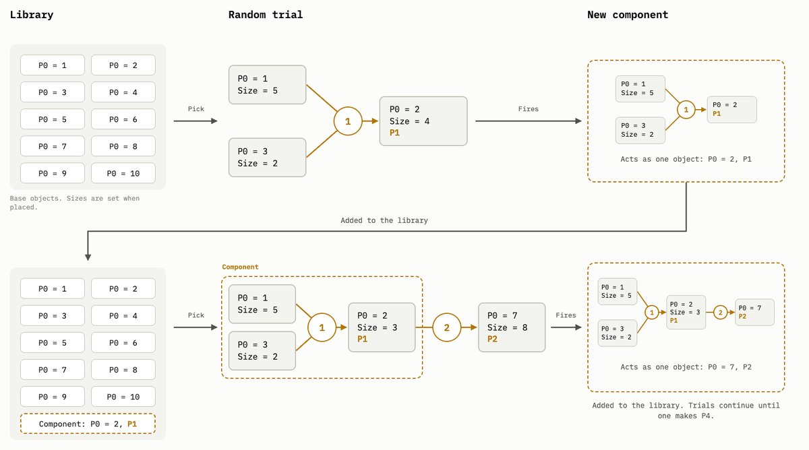
二级模型还可以用来展示有性繁殖积累信息的能力。作者在另一篇文章里写过：有性繁殖本身就是一种模组化搜索——让孩子从两个父母那里各继承一部分基因，使许多不同谱系做出的有用基因「发现」得以在整个种群中传播；这与无性繁殖形成对照，后者只有一个谱系最终存活，其他谱系的发现会因为一种叫「克隆干扰」（clonal interference）的现象而消失。有性繁殖的种群因此能快得多地收敛到最大适应度。
用二级 PTOP 模型能看到同样的事。作者跑了一个版本，两个"技术种群"，每个种群里有 1,000 个随机生成的技术：一个种群实现无性繁殖——每一代，每个技术随机发生一次变异（删一个对象、加一个对象，或改变某个对象的属性），按"解锁的现象层级"衡量最-fit 的成员进入下一代；另一个实现有性繁殖——除了随机变异，子代还由两个亲代的分支随机交叉生成。在 5 个现象层级的设定下，示例中无性繁殖在 2,000 代之后仍未达到最高现象层级；有性繁殖则只用了一百多代就找到了。
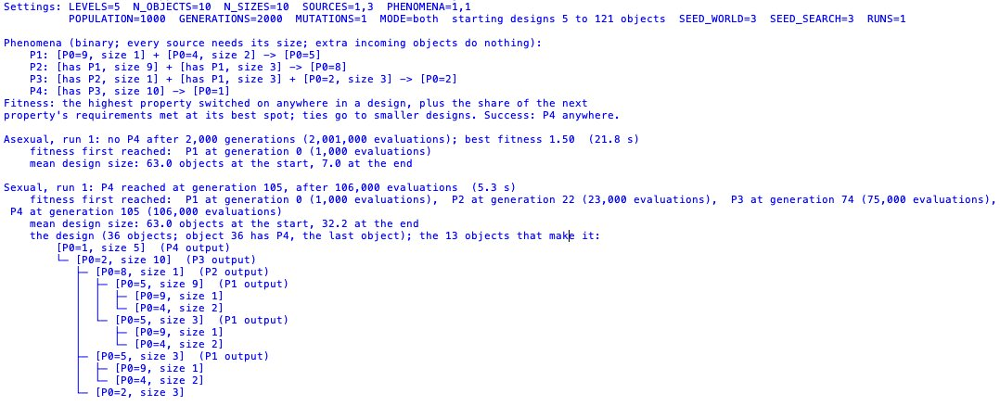
这个版本的 PTOP 更丰富，能展示更广的技术搜索动态，但还是有点简单，于是再加复杂度。
第一，不再让被触发的属性 P1、P2、P3……是二元的（开/关），而是让它们可以取多个值：属性在被开启前取值为 0，一旦某个现象触发，它可以取 1 到 10。它的取值由两件事决定：输入对象的大小与前一个现象的取值。所以对于触发 P2 的现象，P2 的值取决于 P1 的值和它那个对象的大小。可以把它理解成「灯泡灯丝的温度取决于流过它的电流的性质」：电流更大或电压更高，灯丝温度就更高；而发出光的亮度，又取决于灯丝的温度值。
被触发现象的取值按两种方式之一确定：要么在前一个现象的取值与对象大小相等时达到最大，要么在两者尽可能不同时达到最大。所以 P2 可以在 P1 与其尺寸都等于 1、2、3 时取 10，也可以在一个是 10、另一个是 1 时取 10。（对由多个输入对象触发的现象，取各对象分别算出的值的平均。）我们把这个版本叫「三级模型」。
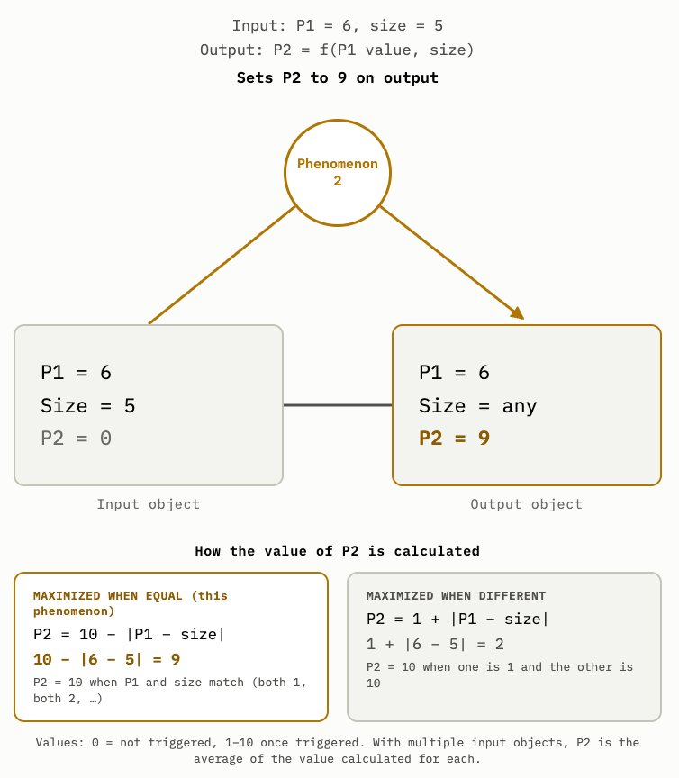
这个改动其实让技术搜索的初始阶段容易多了：触发一个现象不再需要正确的对象尺寸（只需要正确的对象类型），所以要拿到一个能触发最终现象的技术变得非常容易（当然，这很容易被改回去——比如让被触发属性的取值依赖某个新属性、同时让"是否触发"仍然依赖尺寸）。但这样就引入了性能调优这个环节：一个"能用"的技术（即最终被触发属性取正值）可能很容易找到，但要把性能推到最好（让最终现象取值达到 10），就得继续迭代，继续拨弄各个对象的尺寸，把性能一点点推上去。
这个"调音"步骤对应的是技术开发过程：把一项已经能用的技术性能再往上推，或者做出一个以某种特定方式工作的版本。以爱迪生的灯泡为例：白炽灯泡在 19 世纪初就已被演示过，但性能很差——烧得快、泡内壁发黑、或者太费电。爱迪生拿的是一项配置大体已定的技术（高熔点灯丝、玻璃泡、尽量降低反应性的气氛，在之前的灯泡里都是常见特征），然后通过微调各个要素的性质把性能推上去：真空度、灯丝尺寸、碳的具体种类，等等。
三级模型还有一个变化：不同现象能达到的触发属性取值范围不同——一种触发 P2 的方式可能最高只能到 7，另一种则能到 10。对某些技术这没问题；另一些情况下，想把性能拉满就必须换用另一个现象。
这同样映射到真实技术：当开发新技术时，设计者会面对许多种完成某项特定任务的方式，取决于性能要求，不同方案可能各有优劣。在灯泡里，碳丝的 Performance 只能推到某个上限，于是灯泡最终改用钨丝，而这又要求发明新的可延性钨丝生产工艺。同样，内燃机的气门也有多种实现方式；要达到 F1 赛车所需的每分钟转速，就必须用上压缩空气这类复杂气门，而不是传统的钢丝弹簧；但你要造的是一辆四门轿车，便宜简单的钢丝弹簧就够了。
现在给三级模型再加一个元素。到目前为止，我们只有一条属性链：一个现象触发另一个，另一个再触发下一个。现在加上一组并行的属性，由一组并行现象触发。在灯泡的例子里，可以理解为灯丝温度不仅触发白炽，还触发热膨胀与热电子发射。
（在这个例子里，所有这些现象都由同一个属性——温度——触发；在我们的模型里，为了建模方便，每个并行现象由它自己的属性触发。）
这些并行现象在与主现象相同的条件下被触发，但它们的取值未必按同样的方式确定：让 P2 取到 10 的条件，可能让并行属性 T2 只取到 5 或 1。一项技术的最终性能，将取决于两个最终被触发属性的取值——比如不只 P9，还有 T9。
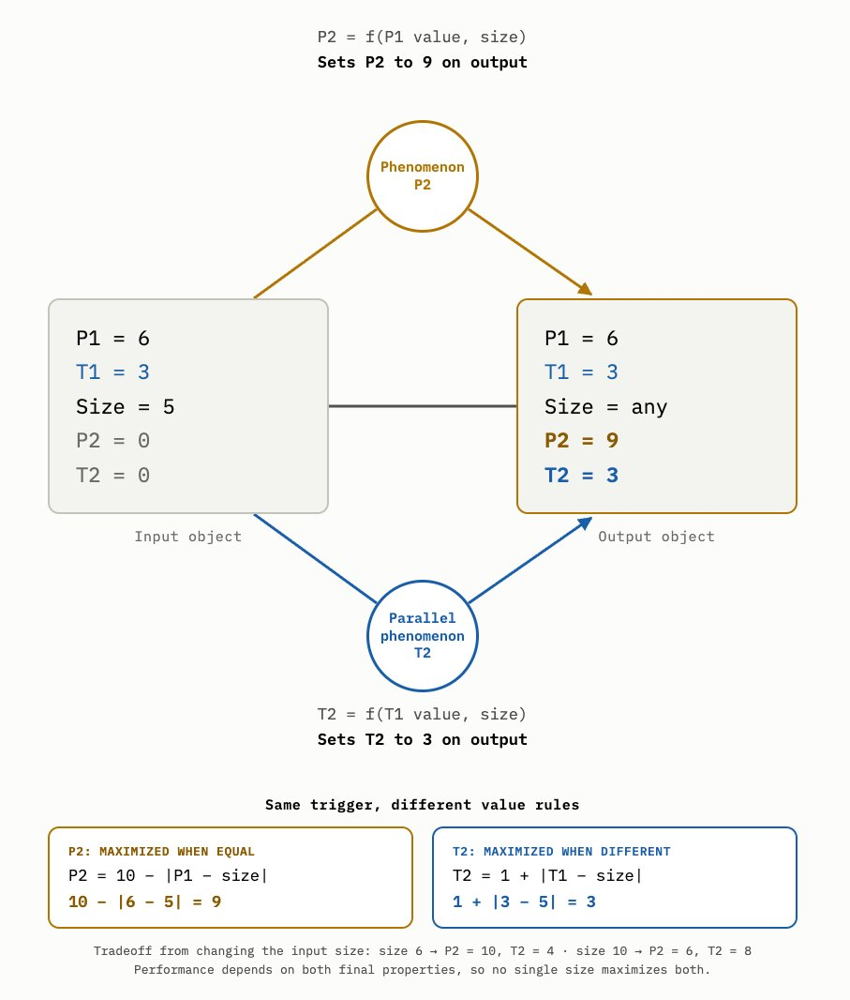
这带来几个后果。其一，技术搜索变得更难：如果目标是同时最大化 P9 和 T9，靠随机调尺寸去"调音"需要的迭代次数，要比只最大化其中一个多得多。这镜像了技术的一般规律：你关心的性能维度越多，把技术做到"够好"就越难。
This mirrors technology more generally: the more dimensions of performance you care about, the more difficult getting a technology that's good enough is.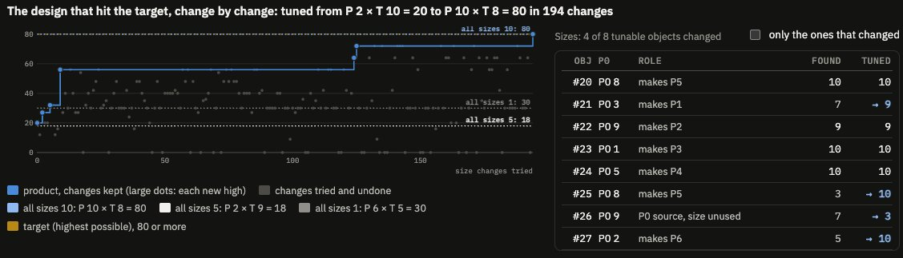
其二，我们现在有了设计取舍。每层有多个现象（以及并行现象），就能构造出不同的设计，它们可能达到不同的性能水平。作者跑了一次三级搜索：生成随机技术原型，然后针对几个不同的性能目标分别调优——最大化 P7 和 T7、最小化它们、以及各自取某个特定值。运行结束时，每个目标对应的对象尺寸安排在根本上不同：同一门基本技术，取决于性能目标，最佳实现方式是不一样的。
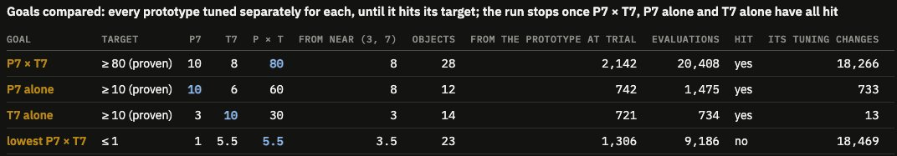
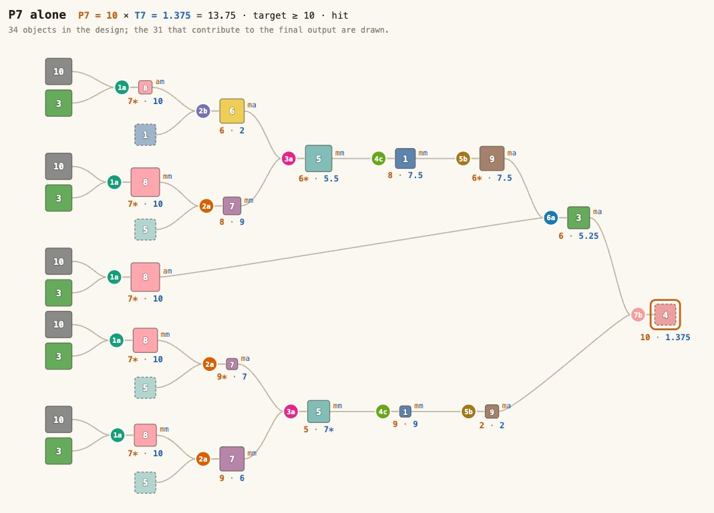
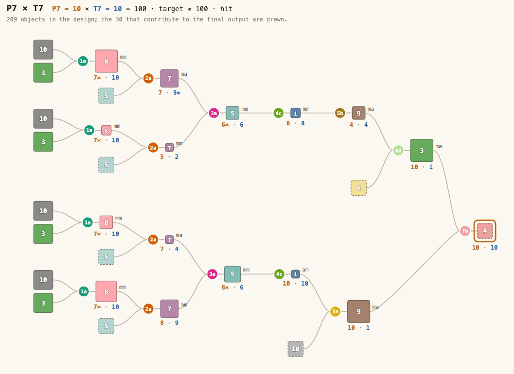
要理解技术进步的性质，把"创造一门新技术"看作一种搜索过程是很有用的——而这个搜索之所以变得可行，靠的是对信息的聪明获取与应用。反过来，我们可以通过研究搜索过程的性质来理解技术进步：是什么让搜索变容易、是什么让它变难、我们能动用哪些信息获取方法，等等。
上面这几个 PTOP 模型，在我看来是探索这类技术搜索动态的一个有用工具：它们易于模拟、足够灵活，又能抓住技术开发中相当多的真实要素。
To understand the nature of technological progress, it's useful to think of creating a new technology as a sort of search process, one that's made tractable by the intelligent acquisition and application of information.| 关键数据点 | 原文 | 译注与核验结论 |
|---|---|---|
| 2^272 vs 宇宙原子数 | "2^272 is more than some estimates of the number of atoms in the observable universe" | ✅ 复算一致：2^272 ≈ 7.55×10^81 > 10^80；10^80 ≈ 2^265.75 |
| 272 条规律的出处 | "As Clancy writes"（原文未点名） | 📌 实为经济学家 Matt Clancy《Are Technologies Inevitable?》——维基百科的"命名方程"清单 |
| 8 位加法器表型数 | "over 10^177,554 phenotypes with 16 inputs and 9 outputs" | ✅ 复算一致：(2^9)^(2^16) = 2^589,824 ≈ 10^177,554 |
| 一级模型搜索空间 | (10x10)^5 = 10 billion（脚注：实际 10 亿） | ✅ 一致；与图 5 实测 1,133,916,844 次吻合 |
| 10^200 的两种拆法 | 100 层 × (10 物型×10 尺寸) vs 10 层 × (10 亿物型×10 亿尺寸) | ✅ 一致；图 7 原表两行 search space 均 1E+200，期望次数 ~10,800 vs 1E+30 |
| 模组化 vs 盲搜 | 1,300 次 vs 10 亿次；100 层时约 10,000 次 | ❓ 作者自建模拟，无法外部复算；图 5/6/7 截图数值与正文吻合 |
| 有性 vs 无性繁殖 | 无性 2,000 代未达最高层级；有性一百多代即找到 | ❓ 作者自建模拟（2 个种群 × 1,000 个技术） |
| 2^852 片叶子（68 个 NAND 门） | "until at the end we have 2^852 possible leaves" | ⚠️ 口径存疑：按本文"每门 1000 种接法"应为 1000^68 ≈ 2^678；该数字引自作者此前那篇模拟文章 |
| 调参实例 | P2×T10=20 → P10×T8=80，用 194 次改动 | ✅ 与图 13 标题逐字一致 |
docs/data-checks/technology-as-search-problem-data-check.md，不随站发布）：
原文脚注 1：The actual search space is 1 billion, not 10, because the size of the last object doesn't affect any phenomena.（正文对应处已译为脚注：实际搜索空间是 10 亿而非 100 亿，因为最后一个对象的尺寸不影响任何现象。）
文中引文出处：① Matt Clancy,《Are Technologies Inevitable?》（https://mattsclancy.substack.com/p/are-technologies-inevitable ）；② Brian Arthur & Wolfgang Polak, "The Evolution of Technology within a Simple Computer Model"；③ Brian Arthur,《The Nature of Technology》；④ Joel Mokyr,《The Gifts of Athena》。
作者：Brian Potter，Construction Physics 主理人（该专栏讨论物理限制下的技术进步与生产率）。本文的 16 张图均由作者用 Claude Opus 5.5 生成或运行其模拟程序得到。
相关文章：Has Broader Stock Market Participation Changed How Interest Rates Affect the Economy? · Why Are Credit Card Rates So High?
原文页脚声明：Construction Physics 由订阅者支持；评论区见原文。